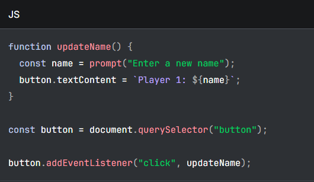

Introduction of JavaScript
Posted by Julius Ray L. Paampag
What is JavaScript?
JavaScript is a scripting or programming language that allows you to implement complex features on web pages — every time a web page does more than just sit there and display static information for you to look at — displaying timely content updates, interactive maps, animated 2D/3D graphics, scrolling video jukeboxes, etc. — you can bet that JavaScript is probably involved. It is the third layer of the layer cake of standard web technologies, two of which (HTML and CSS) we have covered in much more detail in other parts of the Learning Area.
History of JavaScript
JavaScript was created in May 1995 by Brendan Eich while working at Netscape Communications Corporation. Remarkably, he designed and implemented the first version of the language in just 10 days. Initially developed under the codename Mocha, it was briefly renamed LiveScript before officially launching as JavaScript in Netscape Navigator 2.0. The name was a strategic marketing move to capitalize on the massive popularity of Sun Microsystems' Java language, despite the two languages having entirely different underlying architectures.
The Browser Wars and Standardization (1996–1999)
- In 1996, Microsoft reverse-engineered JavaScript to create a compatible version named JScript for Internet Explorer 3.
- Language Fragmentation: The slight differences between JavaScript and JScript forced developers to write separate code blocks for different browsers
- ECMAScript Birth: To fix this division, Netscape submitted the language to ECMA International. In 1997, the official standard ECMAScript (ECMA-262) was born
- Early Stability: The release of ECMAScript 3 in 1999 established a reliable baseline feature set that powered the web for the next ten years.
Key Reasons to Use JavaScript
-
Website Interactivity: It enables real-time updates without reloading the entire page. Examples include interactive dropdown menus, form validations, search box suggestions, and animations
-
Client-Side Processing: Because code runs directly inside the user's browser, execution is incredibly fast. This reduces latency and puts less burden on external servers
-
Full-Stack Development: With the creation of Node.js, you can use a single language to write both front-end (user interface) and back-end (server/database) code.
-
Cross-Platform Versatility: Using frameworks like React Native, Electron, and Phaser, you can build mobile apps, desktop software, and full-scale 2D or 3D video games using JavaScript
-
Massive Ecosystem: It offers a vast ecosystem of libraries and pre-built code frameworks like React, Vue, and Angular, which drastically speeds up development time
-
Beginner-Friendly: It features a highly accessible syntax, dynamic typing, and immediate feedback. You only need a standard text editor and a browser to start coding
So what can it really do?
The core client-side JavaScript language consists of some common programming features that allow you to do things like:
- Store useful values inside variables. In the above example for instance, we ask for a new name to be entered then store that name in a variable called name.
- Operations on pieces of text (known as "strings" in programming). In the above example we take the string "Player 1: " and join it to the name variable to create the complete text label, e.g., "Player 1: Chris".
- Running code in response to certain events occurring on a web page. We used a click event in our example above to detect when the button is clicked and then run the code that updates the text label.
- And much more!
What is even more exciting however is the functionality built on top of the client-side JavaScript language. So-called Application Programming Interfaces (APIs) provide you with extra superpowers to use in your JavaScript code.
APIs are ready-made sets of code building blocks that allow a developer to implement programs that would otherwise be hard or impossible to implement. They do the same thing for programming that ready-made furniture kits do for home building — it is much easier to take ready-cut panels and screw them together to make a bookshelf than it is to work out the design yourself, go and find the correct wood, cut all the panels to the right size and shape, find the correct-sized screws, and then put them together to make a bookshelf.
JavaScript running order
When the browser encounters a block of JavaScript, it generally runs it in order, from top to bottom. This means that you need to be careful what order you put things in. For example, let's return to the block of JavaScript we saw in our first example:

Here, we first define a code block called updateName() (these types of reusable code blocks are called functions), which asks the user for a new name and inserts that name into the text of a button. We then store a reference to a button using document.querySelector and attach an event listener to it using addEventListener so that when the button is clicked, the updateName() function is run.
If you were to swap the order of the const button = ... and button.addEventListener(...) lines, the code would no longer work — instead, you'd get an error returned in the browser developer console — Uncaught ReferenceError: Cannot access 'button' before initialization. This means that the button object has not been initialized yet, so we can't add an event listener to it.
Note: It is not always true that JavaScript runs exactly in order from top to bottom, due to behaviors like hoisting, but for now, bear in mind that generally items need to be defined before you can use them. This is a common source of errors.
By doing a lot of practice, you will definitely experience errors and bugs in your code, but don'tworry, you will overcome them all!
By doing a lot of practice, you will definitely experience errors and bugs in your code, but don't worry, you will overcome them all!